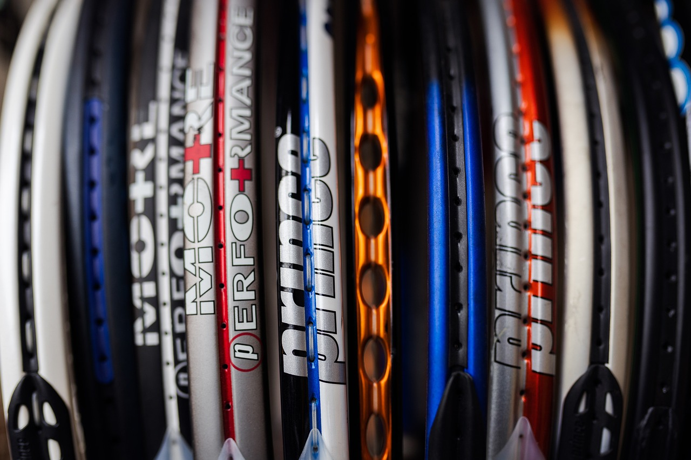
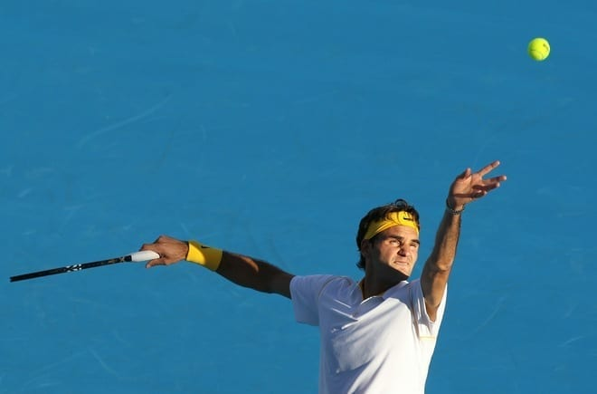
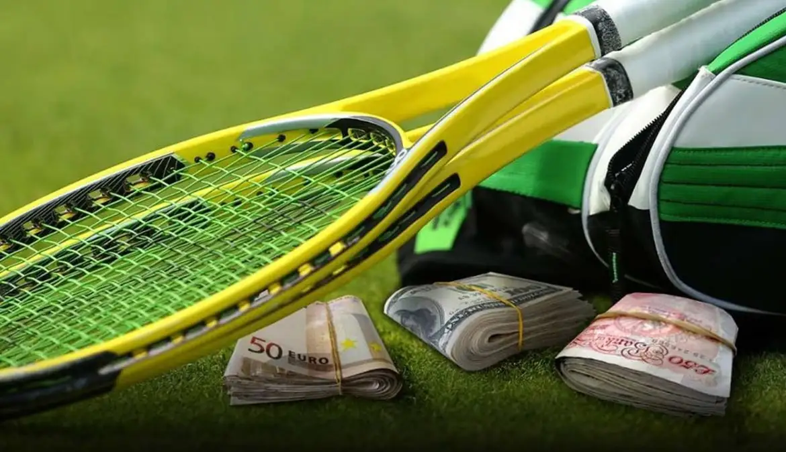
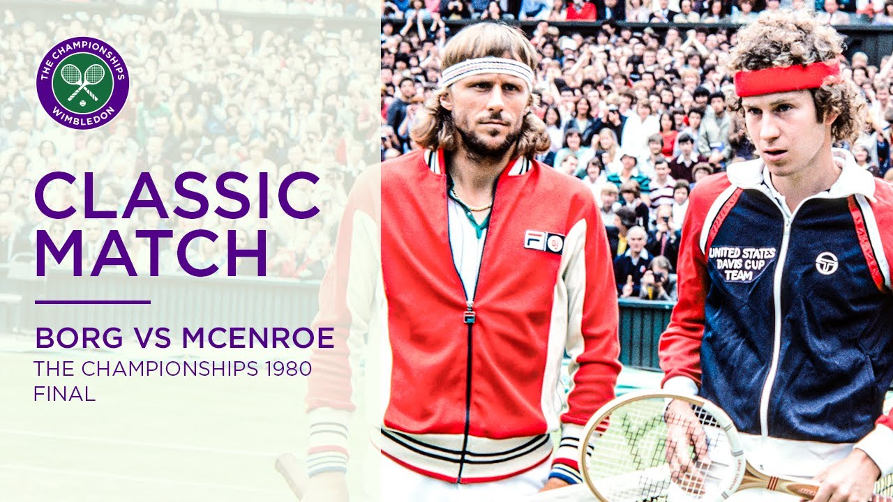
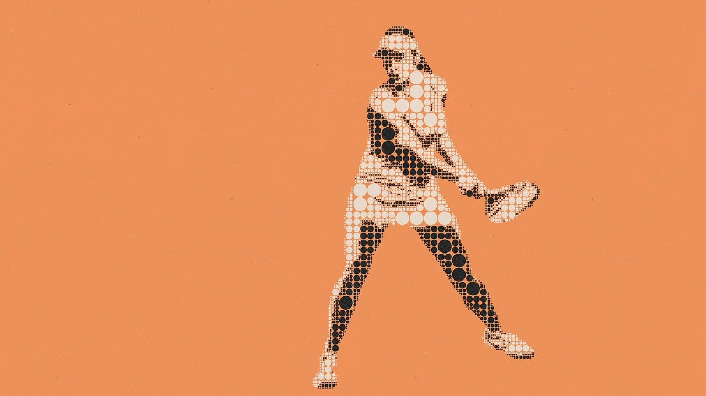

La evolución de la raqueta de tenis: de la madera al grafeno

"¿Alguna vez te has preguntado por qué un 'ace' de hoy es más rápido que los de antes? Descubre cómo la ciencia detrás de tu raqueta ha revolucionado el tenis, ¡de la madera al grafeno!"l tenis, un deporte de elegancia y estrategia, ha visto una revolución silenciosa pero impactante a lo largo de los años, y todo gracias a un protagonista inesperado: la raqueta. Más allá de su función básica, este instrumento ha evolucionado de un simple trozo de madera a una obra de ingeniería de alta tecnología, redefiniendo el juego para siempre. Acompáñanos en un viaje a través de la historia de la raqueta y descubre cómo su evolución ha cambiado la forma en que se juega el tenis.
Leer mas...
Los secretos del saque: el arma más letal en el tenis moderno

"En el mundo del tenis, donde cada punto es una batalla de estrategia y resistencia, hay un golpe que se ha transformado de un simple inicio de juego a un arma letal: el saque. Si bien el saque siempre ha sido fundamental, su papel en el tenis moderno ha evolucionado drásticamente, convirtiéndose en un factor decisivo que puede inclinar la balanza de cualquier partido.
Leer mas...
Cómo empezar a jugar tenis sin gastar demasiado

"En el mundo del tenis, donde cada punto es una batalla de estrategia y resistencia, hay un golpe que se ha transformado de un simple inicio de juego a un arma letal: el saque. Si bien el saque siempre ha sido fundamental, su papel en el tenis moderno ha evolucionado drásticamente, convirtiéndose en un factor decisivo que puede inclinar la balanza de cualquier partido.
Leer mas...
Los partidos más memorables de la historia del tenis

"El tenis ha sido testigo de batallas épicas que han trascendido el deporte para convertirse en momentos icónicos de la cultura popular. Más allá de los trofeos y los récords, hay encuentros que marcaron un antes y un después, redefiniendo lo que significa competir al más alto nivel. Estos partidos no solo ofrecieron espectáculo, sino que enseñaron lecciones profundas sobre resistencia, táctica y mentalidad.
Leer mas...
El auge del tenis femenino: más visibilidad, más espectáculo

"El tenis ha sido testigo de batallas épicas que han trascendido el deporte para convertirse en momentos icónicos de la cultura popular. Más allá de los trofeos y los récords, hay encuentros que marcaron un antes y un después, redefiniendo lo que significa competir al más alto nivel. Estos partidos no solo ofrecieron espectáculo, sino que enseñaron lecciones profundas sobre resistencia, táctica y mentalidad.
Leer mas...